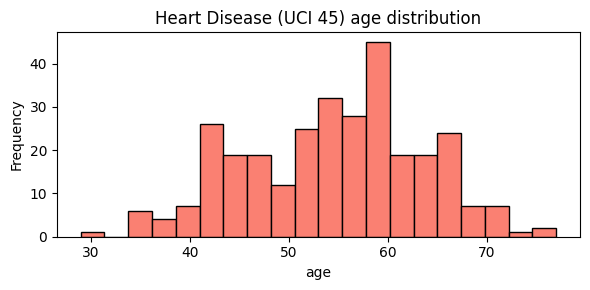

Backends overview
SemSynth ships three interchangeable generation backends—MetaSyn, PyBNesian, and SynthCity—that follow the common run_experiment contract and produce aligned artifacts (synthetic CSVs, per-variable metrics, and manifests). The backends share the same type inference and train/test splitting utilities so synthetic rows and downstream metrics remain comparable across runs. If a backend’s optional dependency is missing, the implementation raises a clear runtime error suggesting the corresponding extras install (for example, pip install semsynth[metasyn]).
We keep all backend examples grounded in the cached Heart Disease dataset to keep comparisons consistent.
# Quick look at the target dataset used below.
import pandas as pd
import matplotlib.pyplot as plt
heart = pd.read_csv("../downloads-cache/uciml/45.csv.gz")
ax = heart["age"].plot.hist(bins=20, figsize=(6, 3), color="salmon", edgecolor="black")
ax.set_title("Heart Disease (UCI 45) age distribution")
ax.set_xlabel("age")
plt.tight_layout()

MetaSyn
Uses
MetaFrame.fit_dataframeto learn column-wise distributions after inferring discrete and continuous fields, then synthesizes a user-specified number of rows. The backend coerces continuous features to floats, preserves categorical categories, and writes asynthetic.csvaligned to the original schema.Persists evaluation artifacts alongside the dataset, including per-variable distance metrics and summary statistics derived from the held-out test split. A manifest records the backend name, dataset identifiers, seed, requested rows, and split ratio to keep runs auditable.
PyBNesian
Learns a Bayesian network with hill climbing and configurable network types (
clgorsemiparametric) and scoring/structure-search options. Sensitive roots (age, sex, race by default) are blacklisted from being child nodes to avoid trivial leakage pathways.Samples synthetic rows from the fitted network, exports optional SemMap parquet, and computes per-variable distances plus a held-out log-likelihood statistic. The backend serializes GraphViz and GraphML structures (when optional dependencies are present) and stores a manifest capturing structure parameters and dataset metadata.
SynthCity
Normalizes generator aliases (e.g.,
ctgan,pategan,bayesiannetwork) to the canonical SynthCity plugin names, then loads the chosen plugin with sanitized parameters. Continuous features are coerced to numeric types and categories are string-safe before fitting on the training split.Generates synthetic rows through the plugin’s
generateAPI, aligns columns to the training schema, and writes synthetic CSVs and optional SemMap parquet. Per-variable distances and summary statistics are emitted alongside a manifest documenting the generator, seed, row count, and split settings.
# Inspect a tiny inline TOML snippet to see which backends would execute.
from semsynth.models import load_model_configs, parse_toml_config
toml_text = """
[pipeline]
generate_umap = true
compute_privacy = false
[[models]]
name = "metasyn"
backend = "metasyn"
[[models]]
name = "clg_mi2"
backend = "pybnesian"
"""
config = parse_toml_config(toml_text)
bundle = load_model_configs(config_data=config)
[(spec.name, spec.backend) for spec in bundle.specs]
[('metasyn', 'metasyn'), ('clg_mi2', 'pybnesian')]
After you run a report, check output/Heart Disease/models/<backend>/ to compare manifests, metrics, and synthetic CSVs across engines.
References
MetaSyn documentation: https://metasyn.readthedocs.io/
PyBNesian documentation: https://pybnesian.readthedocs.io/
SynthCity documentation: https://synthcity.readthedocs.io/